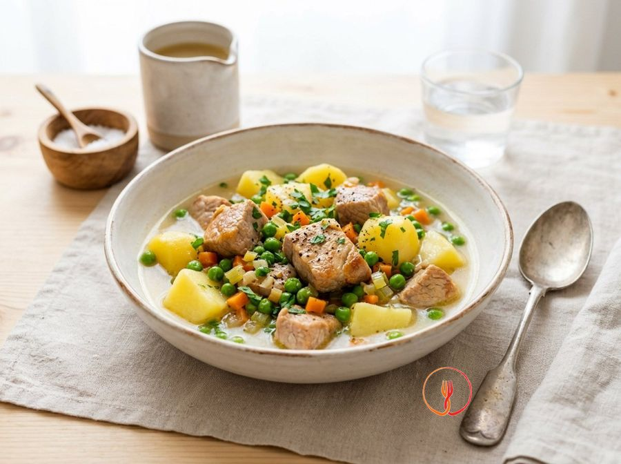

Pork Loin Stew with Potatoes and Peas
Pork loin is a lean cut and often very affordable at the supermarket. This white stew is a balanced one-pot meal that the whole family will enjoy.
A classic of Italian cuisine, this pork loin stew is a tender and succulent comfort food. Slow cooking transforms the meat and potatoes into a harmonious dish, enriched by the bright color of peas. Perfect for a traditional family Sunday lunch.
Ingredients
- Pork loin, cut into cubes500 g
- Yellow-fleshed potatoes600 g
- Frozen peas200 g
- Carrot1 pcs
- Celery stalk1 pcs
- Vegetable stock (can be from a cube)500 ml
- Plain flour20 g
Allergens
Gluten, Celery
Method
- Start by preparing the aromatic base for your stew with surgical precision. Take the carrot and celery stalk, wash them thoroughly, peel the carrot and remove the fibrous strings from the celery, then finely mince them using a chef's knife or a food processor. Spend about 5 minutes on this to ensure the pieces are tiny and uniform. The final result should be a colourful vegetable 'mignonette' that releases a fresh, vibrant aroma. Chef's tip: mincing the vegetables very finely will allow them to literally 'melt' into the cooking juices, creating a thick sauce without obvious vegetable chunks.
- Now move on to preparing the meat to ensure it stays tender during the long cooking process. Take the 500g of pork loin, already cut into roughly 3cm cubes, and toss them in the 20g of plain flour, shaking off any excess with a sieve or your hands. Do this quickly to prevent the flour from becoming damp and sticky. The cubes should appear lightly dusted with a thin, dry white powder. Chef's tip: do not flour the meat too far in advance; do it only a moment before putting it in the pan, otherwise the flour will absorb the meat's moisture and lose its sealing function.
- Proceed with searing the meat, a crucial step for developing the Maillard reaction. In a large casserole dish, heat two tablespoons of extra virgin olive oil (not in the list but necessary for the technique) over a high heat and lay the pork cubes in, taking care not to crowd the bottom. Let them sizzle for about 4-5 minutes, turning with tongs until every side is well-browned and crispy. You should achieve a fragrant amber crust that will preserve the pork's internal juices. Chef's tip: if you see the meat releasing too much water, turn up the heat; the meat must fry, not boil in its own liquid.
- Once the meat is browned, remove it temporarily from the casserole and focus on the vegetables. In the same pot, using the fats and juices remaining on the bottom, add the minced carrot and celery prepared earlier. Reduce the heat to medium-low and let them soften gently for about 5-6 minutes, adding a tablespoon of vegetable stock if the base gets too dry. The vegetables should become tender, translucent, and release a sweet, inviting aroma. Chef's tip: scrape the bottom of the pot well with a wooden spoon as the vegetables soften to recover the meat juices (deglazing), which will add incredible flavour to the sauce.
- It is time to combine the main ingredients to start the slow cooking. Return the browned pork cubes to the casserole along with the vegetables and add the 600g of yellow-fleshed potatoes, previously peeled and cut into cubes of the same size as the meat. Stir everything well for a minute over medium heat to flavour the potatoes with the meat fat. The ingredients should look glossy and well-distributed in the pot. Chef's tip: cutting the potatoes and meat to the same size is not just for aesthetics; it ensures even cooking where every bite has the same texture.
- Start the stewing phase by adding the necessary cooking liquid. Gradually pour the 500ml of hot vegetable stock into the casserole until it just touches the surface of the meat and potatoes. Cover tightly with a lid and set the heat to minimum, letting it simmer very gently for about 25 minutes. The result will be a moist, controlled environment where the meat fibres begin to relax and the potatoes start to release starch. Chef's tip: always use hot stock so as not to interrupt the boil and cause thermal shock to the meat, which could make it turn tough.
- Add the final touch of colour and freshness to your stew. Lift the lid and pour the 200g of frozen peas directly into the casserole, stirring gently so as not to break the potatoes, which will now be tender. Continue cooking for another 10 minutes, this time without the lid, maintaining a medium heat to allow excess liquid to evaporate. The sauce should thicken into a velvety cream that coats the ingredients, while the peas should be tender but still a bright green. Chef's tip: do not overcook the peas; their colour vibrancy is the indicator of the finished dish's freshness.
- Finish the preparation by checking the consistency and letting the dish rest. Turn off the heat and check with a fork: it should slide into the potatoes without resistance and the meat should pull apart easily. Let the stew rest in the closed pot for 5 minutes before serving; this will allow the flavours to settle and the sauce to reach the perfect density. You will get a rich, harmonious dish with the comforting scent of home. Chef's tip: if the sauce still seems too thin, mash a couple of potato cubes with a fork and stir; the extra starch will thicken the sauce instantly.
Tips
- Flour the pork cubes well and shake off any excess to achieve a thick, velvety sauce.
- Sear the meat over high heat to seal in the juices before starting the braising process.
- Cut the potatoes to the same size as the meat to ensure all ingredients cook evenly.
Variations
- You can use fresh peas instead of frozen ones during the spring season.
- Replace the carrot and celery with plenty of red onion for a sweeter cooking base.
Nutrition facts (estimate)
| Per serving (385 g) | Per 100 g | |
|---|---|---|
| Energy | 1640 kJ / 392 kcal | 426 kJ / 102 kcal |
| Protein | 30.2 g | 7.8 g |
| Carbohydrates | 38.5 g | 10.0 g |
| of which sugars | 4.1 g | 1.1 g |
| Fat | 11.8 g | 3.1 g |
| of which saturates | 3.1 g | 0.8 g |
| Fibre | 6.8 g | 1.8 g |
| Salt | 1.4 g | 0.4 g |
AI estimates based on average CREA / USDA data: indicative only, not a substitute for medical or dietitian advice.
Open the recipe in the app for the shopping list, ingredient sheets and nearby shops.